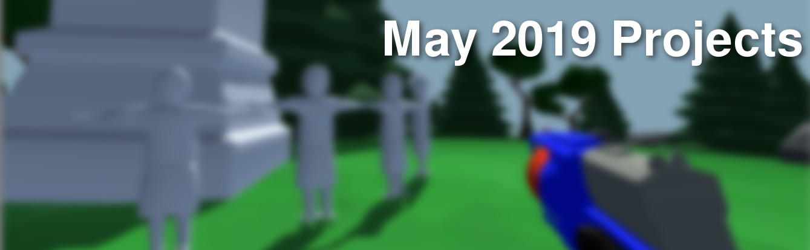

May 2019: Monthly Mini Projects (2019/06/04)
Welcome to the first of (hopefully many) articles in my Monthly Mini Project (MMP) series. Recently I've been wanting to improve my documentation process for projects. Although only a few make it to my Projects page, I work on other, minor projects in my spare time. These projects are not only fun, but can also be good learning experiences. In this series I'd like to share both the fun experiences and the learning experiences (which, in some cases, are only fun in retrospect).
Although most of the content on my site is technical in nature, not everything I work on is. I hope that there will be something for everyone in terms of topics. I find often times the things I learn through non-technical projects can inspire the technical ones, and vice-versa.
For a less formal and more up-to-the-minute log, you can follow me on Twitter.
Smallworld - Open World(s) Video Game Prototype
The biggest problem with developing space games is actually hidden in the very name of the genre. It's a question that developers of games like Elite Dangerous and Star Citizen are probably grappling with - "what do we do with all this space?".
For example, "ArcCorp" is a planet currently explorable in the Star Citizen development universe. A massive city covers nearly the entire >8000km diameter planet. At first players might believe it to be fully explorable. This is not the case however, with the majority of the planet covered in a no-fly zone and only a few small areas available to walk around.
The scale is merely a limitation imposed by the laws of physics - planets must be big if gravity is to be properly obeyed and a lot of content is needed to fill them. I wanted to know what a space game would feel if realism (specifically scale) wasn't a locked-in factor, and if the worlds were small enough to enable players to populate an entire planet with their creations. So I modeled a few trees and rocks, and fired up Unity to create a prototype for a sandbox game on small (<1km diameter) planets.
The firepit is actually a jump pad!
The first thing you probably notice is the visual curvature of the planet. This planet in particular is 1km in diameter. It turns out curvature is visible even on planets that are 10km in diameter or more. It quickly became clear that on small planets the curvature and the fast falloff of objects would need to be an inevitable mechanic of the game (read: "a feature, not a bug").
By default, Unity calculates gravitational forces assuming a flat plane, so some adaptation was needed for a globe. In the current prototype, the gravity vector (direction) is simply the difference between the player's position vector and the planet's position vector. To keep the player standing up relative to the surface, I used Unity's Quaternion rotation functions to rotate the player so that its local Up vector was parallel to the gravity vector. This can be accomplished with the following code:
Finally, I had issues with object mass. Changing the object's rigidbody mass to something other than 1 resulted in it falling slower or faster than other objects (despite mass being irrelevant to gravitational acceleration in real life). By changing the ForceMode of Rigidbody.AddForce() to Accelleration, the issue was solved, and I could change the masses of objects while still having them fall at the same rate. Now shooting an anvil with a foam dart blaster doesn't send it 40 feet.
AddForce(Vector3.Normalize(gravityVector) * gravity, ForceMode.Acceleration); //fixed
Right now there is only one planet, and the player can't hop into a ship and fly around the system. Once I work out how to make the planetary gameplay fun, I'll try expanding to multiple planets. I recorded and tweeted a little bit of gameplay as it stands so far.
In doing this project I decided to populate it with some old 3D models I had on my computer, hence the Nerf blaster. This itself prompted another learning experience.
Nerf Blaster Model Overhaul
A year or so ago (about the last time I 3D modelled anything) I made a model of the Nerf Strongarm blaster in Blender. It looked okay, but I was always disliked how none of the corners were sharp. After watching this tutorial from BlenderGuru on YouTube, I learned alot about about topology - the way that a surface "flows" around details of a model. Even though I had been 3d modeling for years, I had never paid much attention to HOW I was modeling. Faces and edges should have different flows around different parts of the model. The following image shows how my model looked before and after with respect to the edge I was trying to create.
Before and after changing topology and adding edge loops to detail.
By stacking edge loops near eachother a beveled edge can be created, which looks much more realistic than a hard, polygonal edge. Stacking of edge loops becomes significantly easier with good topology, and if the surface was to be animated the animations would have less artifacts. I still have work to do on the rest of the model (and I'm still not 100% sure if the way I've done the topology is best), but having this new knowledge should help make it easier to detail in the long run.
Cappuccinos
I've never really been a coffee person, buying Tim Horton's Double Doubles in progressively increasing sizes mostly as a utility throughout University. Recently however I discovered that making my own coffee gave me a much better experience. After experimenting with a drip machine I found in my apartment for a while, I inquired of my father about next steps. My father appreciates a good cup of coffee so much that he took a barista class for fun (my father is not a person you would initially imagine showing up at a barista class). He lent me a French Press and a Moka Pot.
Without a doubt, the French Press made a much better cup - much more flavour, much less watery. It's like the flavor difference between a hot chocolate made with water and a hot chocolate made with milk - with milk the taste feels "fuller". I even found it nice to drink without any cream (though I still needed about the same amount of sugar).
This month my girlfriend and I travelled to Italy. Among the great memories, views and food was great coffee. At the AirB&Bs we stayed at, the locals used Moka Pots, which work by boiling water through a layer of coffee grounds. When compared to a French Press or drip machine, the temperature and pressure are higher.
One of my first cappuccino attempts - notice how the foam seems detached from and sits on top of the layer below - as far as I understand it should blend in. Need more practice!
It turns out that temperature and pressure, along with duration of exposure to grounds and the type of coffee, are key factors in making any coffee. Characterised by its creamy texture and intense flavor, espresso is made by slowly passing boiling water through fine coffee grounds at high pressure. Drip machines have high temperatures, but low pressure and a short time to pass through the grounds. French Presses have a high temperature and a long brew time, but still a low pressure. Moka Pots have high temperature, higher pressure, and a long exposure to the grounds, and produce coffee closest to espresso, without needing an espresso machine (which further increases the temperature and pressure).
Espresso is like the master key of coffee - with a good espresso base, you can make many different drinks. My first foray was a drink we enjoyed often during our mornings in Italy - the Cappuccino, formed with equal parts espresso, steamed milk and foamed milk. Without an espresso machine it's difficult to make true steamed milk (which is formed by passing hot steam through milk), so instead I heated the milk on the stovetop. To make the foamed milk, I experimented with a motorized milk frother, but discovered that plunging the hot milk in an empty French Press formed much finer and more consistent foam (at the expense of wasting milk - I've ordered a dedicated plunger-based frother from Amazon that should be more efficient).
I think it tastes pretty good, and I no longer need any sugar! I'm still struggling with the consistency of my foam though - perhaps the milk frother will fix this issue.
Back To Blog© Michael Kafarowski 2019
 Site built completely from scratch and with love by Michael Kafarowski!
Site built completely from scratch and with love by Michael Kafarowski!